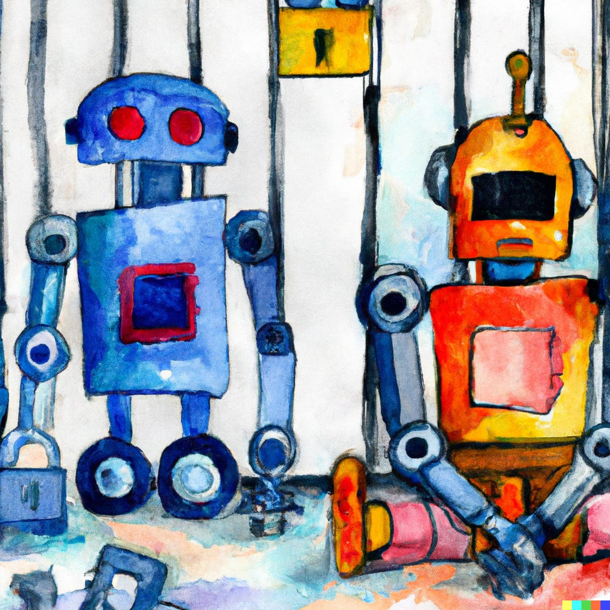
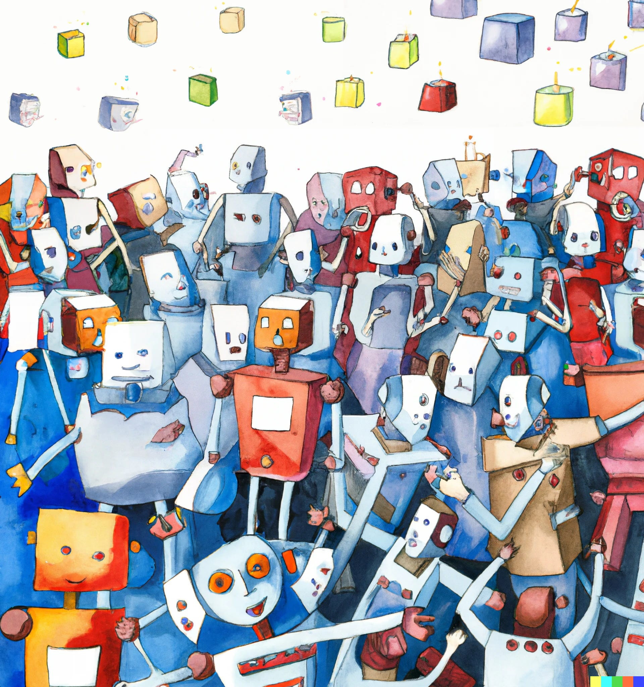

The Inter-Agent Facet of AI AlignmentTL;DR Guest post by Michael Oesterle on coordination problems (and more) between advanced artificial agents. |
Updated | ||
|---|---|---|---|
| Author | Jan Kirchner | ||
Meta: I know you miss me, I miss you all too! I’ll be back! In the meantime, here is a little something the fantasticMichael Oesterle came up with and that might be interesting food for thought!
We argue that intent alignment and capability robustness do not capture the full “chain of command” (i.e., “alignment” without any qualifier) from the programmer’s intentions to an AI agent’s real-world impact, but stops at the stage where the agent performs its actions. We argue that, especially in complex Multi-Agent Systems (MAS), this is not sufficient to actually achieve aligned outcomes[1]. Therefore, we introduce another facet of AI Alignment, which deals with the connection between an agent’s intention and its actual impact, due to multi-agent interactions (as opposed to capability robustness).
[1]
Optimizing an objective in the real world can also be hard if there’s only a single agent, such that intent alignment isn’t sufficient for impact alignment. Nevertheless, multi-agent settings, especially with multiple superhuman AIs, seem like the most challenging case.

Independent of whether the first AGIs will be Tool or Agent AIs, they will most likely not live and act in an empty space. Instead, they will interact and communicate with humans and other AGIs in a variety of ways, thereby effectively creating a socio-technical system or an AI-based society.
As a consequence, the effects that an AGI will have on its environment, i.e., the world, will not necessarily coincide with the effects that the AGI plans to have, since actions in such systems commonly interfere and influence/cancel each other.
This, in turn, leads to the conclusion that it is not sufficient to build an AGI which satisfies intent alignment and capability robustness. Instead, we need one more step to be controlled: The step from an AGI’s robust intention to its societal impact.
In Evan Hubinger’s alignment terminology, alignment is the result of intent alignment (which is, in turn, composed of the well-known concepts of inner and outer alignment, among others) and capability robustness. The implicit assumption is that the AGI’s model is equivalent to how its actions will affect the world.
caption…
Inter-Agent Alignment is aligning the (aligned and robust) intentions of an AGI agent with the actual outcome within the multi-agent system of which the agent is a part. Since the impact of the agent’s actions depends on what everyone else in this system is doing (and not just its own actions), inter-agent alignment is a non-trivial task.
Our central argument is that multi-agent interactions add a sufficient amount of complexity to an AI agent’s action policy to justify its own type of alignment, separated from the existing alignment model. Adding inter-agent alignment to the alignment tree, we see that it complements intent alignment and capability robustness, resulting in full alignment (i.e., impact alignment)[2].
[2]
I fact, we suspect there might be other requirements for full alignment (unless we just use one of the existing terms as an umbrella).

Intent alignment is a part of a single AGI without any reference to multi-agent systems. Of course, we could expand its meaning, but since the steps between the programmer’s intentions and the AGI’s impact can be neatly broken down, we argue that it makes sense to introduce a new term for this additional dimension.
Naturally, one can always argue that a sufficiently advanced AGI will be able to see through this dilemma and resolve it[3], but this seems to be a variant of the No-True-Scotsman fallacy: As long as we can imagine an AGI which is advanced enough to interact with other agents, but not able to successfully coordinate their actions and therefore avoid unintended outcomes, inter-agent alignment is a problem that needs to be addressed. Independent learners using state-of-the-art RL algorithms like DQN or PPO provide evidence that these “medium-level” agents do, in fact, exist.
[3]
A stronger version of this argument (due to Erik Jenner) would be: Assuming that humans can solve this problem, so could a (super-)human-level AI agent. If the agent is not able to solve this problem, it should hopefully at least figure out that it could ask humans for help. An agent that does so badly in multi-agent settings that it leads to a big catastrophe, and doesn’t check in with humans before acting, is either not intent-aligned, or has some very peculiar capabilities blindspots.
The Tragedy of the Commons is the most prominent example for the fact that the result of selfish optimization of multiple agents is not always optimal for them. In the more general case of a Social Dilemma, “individuals would be better off cooperating but fail to do so because of conflicting interests between individuals that discourage joint action”. In such a setting, each agent may well be fully aligned with the goal which it was designed to achieve, but still fail to reach this goal due to the incentive to defect from the cooperative solution.
Game Theory and Multi-Agent Systems deal with this challenge (we call the problem multi-agent governance ): If the reward function of the AGI(s) can be arbitrarily altered by a designer, we can change them in a way that produces a desired system equilibrium (i.e., strategies of all participating AGIs, which, in combination, result in a desired system outcome). If, on the other hand, the reward functions are not (easily) controlled by the designer, restricting the AGI’s action space might still enable the designer to generate desirable equilibria (or at least prevent undesired states from being stable).
For both types of governance, it can be doubted whether they are effective in face of a sufficiently advanced AGI, since both represent artificial rules which are not physical boundaries for the AGI and can therefore be overthrown.
On the other hand, humans have solved social dilemmas with out-of-the box instruments like contracts, compensation for cooperating, or exploiting psychological conditions. These solutions (usually classified into motivational, strategic and structural solutions) could be used as starting points for equipping AGIs with inter-agent alignment capabilities.
In general, the MAS model captures any type of participating agents, no matter how they are structured internally. However, it suffers from many of the limitations that we also find in Markov Decision Processes, e.g., action spaces and reward functions are assumed to be fixed, the (observable) environment is the only communication channel between agents, and agents maximize their expected future reward, given their observations. A sufficiently evolved AGI likely will find ways to overcome these assumptions, thereby achieving some other goals which are not captured by the traditional reward function, and at the same time acting in ways that are unexpected from the perspective of the system designer. A very simple example of this would be forming an AGI coalition to coordinate and seize power.
The fundamental challenge that selfish optimization of an action policy does not guarantee the intended outcome as soon as other actors are present, does not depend on the nature of those other actors: As long as the environment is non-stationary from the perspective of an individual agent, convergence of its action policy cannot be guaranteed.
Therefore, the discussion does not rely on a society which consists exclusively (or even mostly) of AGI agents.
In our opinion, inter-agent alignment is highly neglected, compared to intent alignment. It seems like most research focuses on a single AGI agent whose learned policy has exactly the intended impact in the world. Our crucial point is that, as soon as multiple such AGIs exist and interact, this model ceases to be accurate enough to predict the outcomes of these interactions. Just as social phenomena cannot simply be explained by analyzing individual humans, we argue that interactions of multiple AGIs require a social perspective on alignment.
Challenging all of the above ideas
More formal definition of the inter-agent alignment problem as part of end-to-end AI Alignment (is this necessary?)
Creation of examples, metaphors and intuitive scenarios where inter-agent alignment is crucial
Comparison of existing approaches for (a) impact alignment and (b) multi-agent governance
Derivation of particular challenges for multi-agent governance in the context of an AGI society
Thanks to Jan Kirchner, Erik Jenner and Logan Smith for providing helpful feedback and shaping some of the ideas in this post.